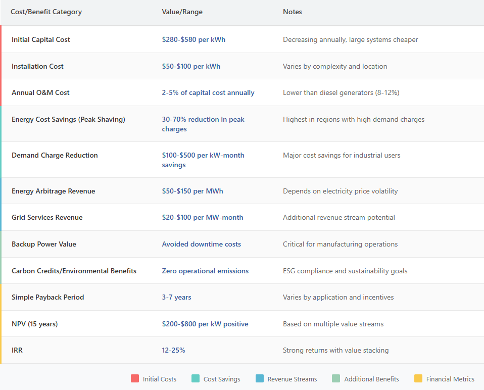
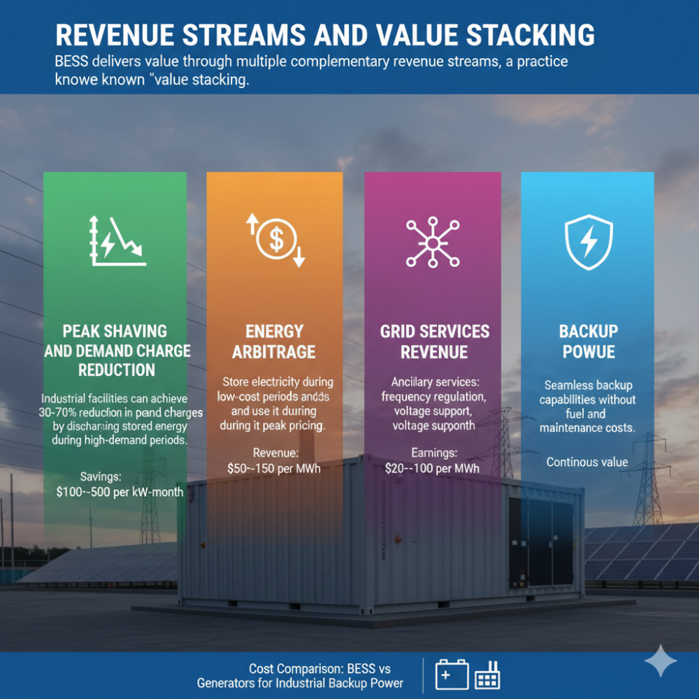
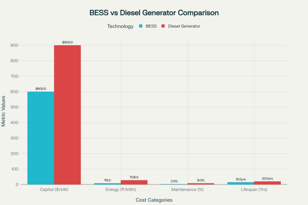
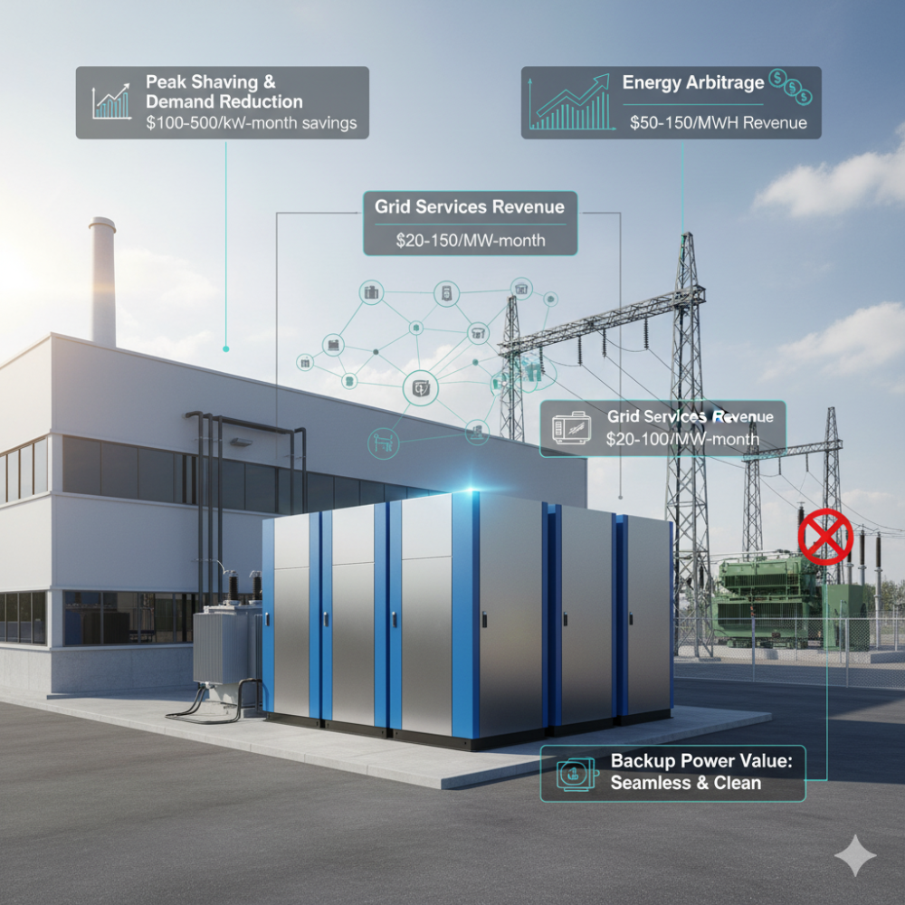
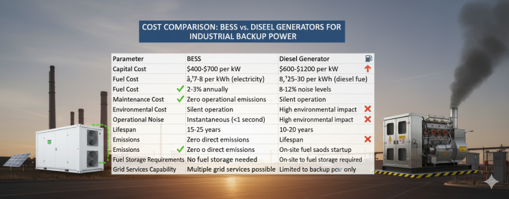
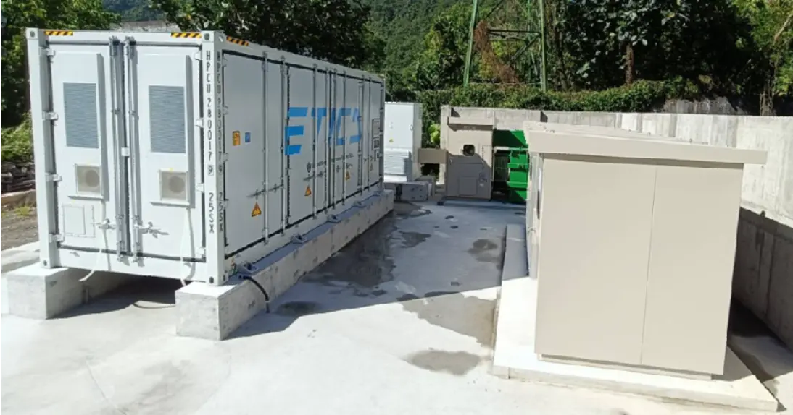
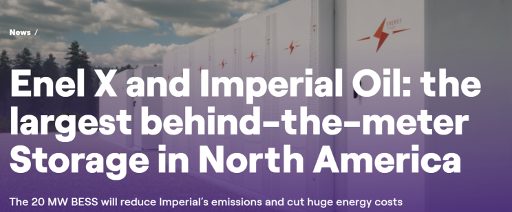
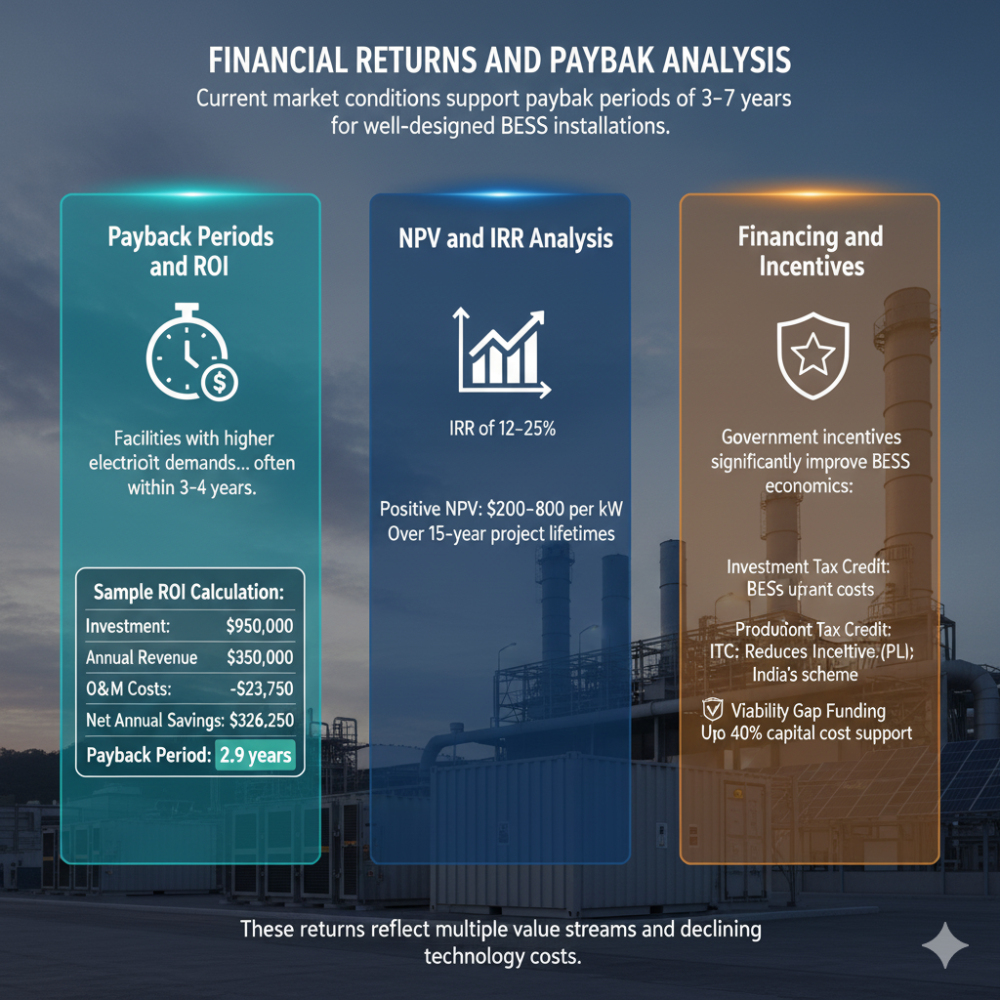
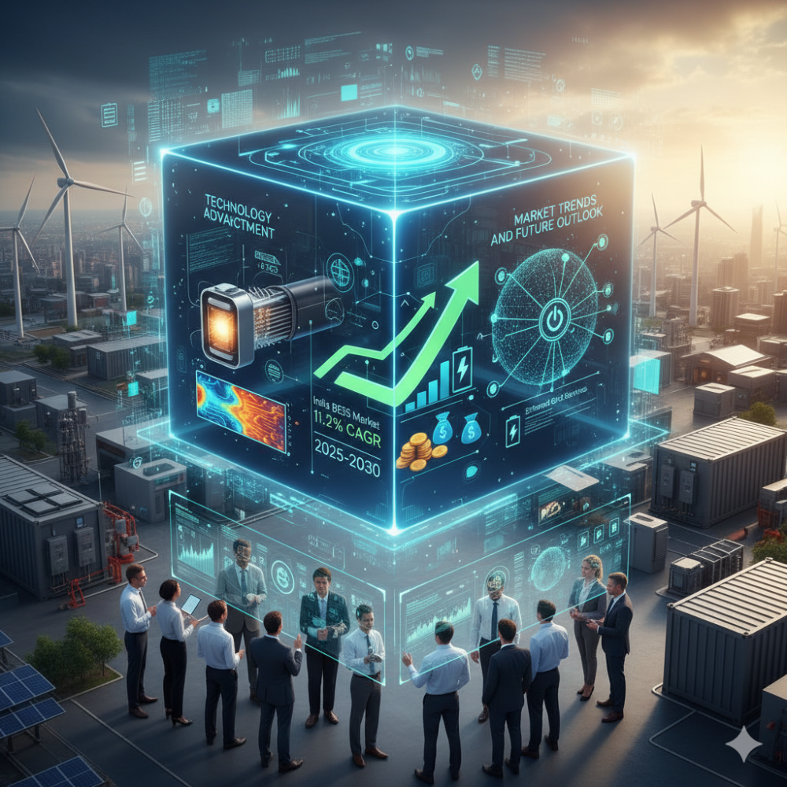
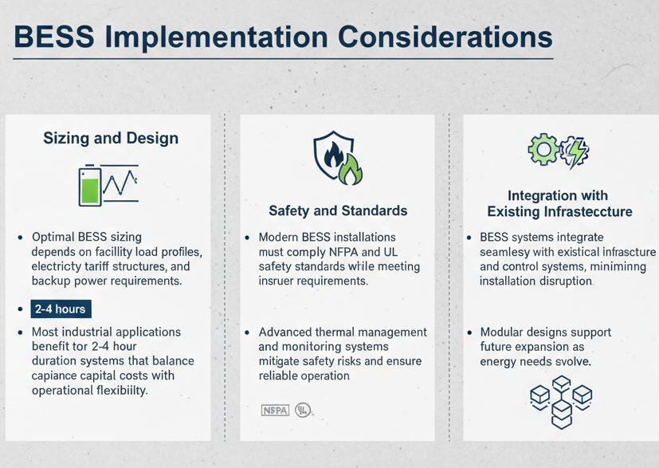

The industrial sector faces mounting pressure to secure reliable, cost-effective, and sustainable backup power solutions. Battery Energy Storage Systems (BESS) are emerging as a superior alternative to traditional diesel generators, offering significant economic advantages while supporting environmental sustainability goals. This comprehensive analysis demonstrates that BESS can deliver payback periods as short as 3-5 years while providing multiple revenue streams beyond basic backup power.
The Economic Case for BESS
Capital Investment and Cost Structure
Industrial BESS installations require substantial upfront investment, with costs ranging from $280-$580 per kWh for installed capacity. However, this investment profile has become increasingly attractive due to dramatic cost reductions - battery prices have dropped by 89% between 2010-2020, making BESS economically competitive with traditional backup solutions.
The total cost structure includes:
- Battery system costs: $300-$400 per kWh
- Balance of system: $50-$150 per kWh
- Installation costs: $50-$100 per kWh
- Annual O&M costs: 2-5% of capital cost
Large-scale containerized systems benefit from economies of scale, with costs dropping to $180-$300 per kWh for systems above 100 kWh capacity. A typical 1MW/2MWh industrial installation requires approximately $950,000 in total capital expenditure.

Revenue Streams and Value Stacking
BESS delivers value through multiple complementary revenue streams, a practice known as "value stacking":
- Peak Shaving and Demand Charge Reduction: Industrial facilities can achieve 30-70% reduction in peak demand charges by discharging stored energy during high-demand periods. In regions with high demand charges, this alone can justify the investment, with savings ranging from $100-$500 per kW-month.
- Energy Arbitrage: BESS enables facilities to store electricity during lCost Comparison: BESS vs Diesel Generators for Industrial Backup Powerow-cost periods and use it during peak pricing, generating $50-$150 per MWh in arbitrage revenue. This strategy is particularly effective in regions with significant time-of-use price differentials.

- Grid Services Revenue: Modern BESS can participate in ancillary services markets, earning $20-$100 per MW-month for frequency regulation, voltage support, and spinning reserves. These services provide additional revenue streams while supporting grid stability.
- Backup Power Value: Unlike diesel generators that only provide emergency power, BESS delivers continuous value through seamless backup capabilities without the operational costs associated with fuel and maintenance.

Operational Benefits and Performance
Response Time and Power Quality
BESS provides instantaneous power delivery with response times under one second, compared to 30-60 seconds for diesel generators. This immediate response capability is crucial for sensitive manufacturing processes where even brief power interruptions can cause significant losses.
The systems also deliver superior power quality, smoothing voltage fluctuations and frequency disturbances that can damage sensitive equipment or cause production defects.
Maintenance and Operational Efficiency
Annual maintenance costs for BESS represent only 2-5% of capital investment, significantly lower than diesel generators which require 8-12% annually. BESS systems operate silently with minimal moving parts, reducing wear and maintenance requirements.
The operational lifespan of modern BESS ranges from 15-25 years, with high-quality systems potentially lasting longer with proper maintenance. Battery modules typically require replacement every 10-15 years, but the supporting infrastructure continues operating throughout the system's life.

Comparative Analysis: BESS vs Diesel Generators
Cost Comparison
The total cost of ownership strongly favors BESS over diesel generators:
Fuel Costs: Diesel generators incur fuel costs of ₹25-30 per kWh, approximately 3-4 times higher than electricity costs for charging BESS at ₹7-8 per kWh. This differential creates substantial ongoing savings for BESS installations.
Environmental Costs: Diesel generators produce significant emissions including NOx, PM2.5, and CO2, contributing to environmental and health costs. In Sub-Saharan Africa, backup generators account for 15% of regional NOx emissions and PM2.5 emissions equal to 35% of all motor vehicles.
Operational Constraints: Diesel generators require on-site fuel storage, regular maintenance, and produce noise pollution that can limit their deployment in urban or residential areas.

Case Study Evidence
Real-world deployments demonstrate BESS effectiveness:
- Factory Rooftop Installation: A 125kW/250kWh BESS deployment achieved 28% reduction in energy costs through peak demand management and time-of-use optimization.
- Cement Manufacturing: A 3.06 MWh BESS installation enabled substantial capacity payment reductions and optimized time-of-use consumption, providing a scalable model for industrial energy savings.

- Imperial Oil: Deployed the largest behind-the-meter BESS in North America at 20 MW/40 MWh, targeting significant annual energy savings through peak demand charge reduction.

Financial Returns and Payback Analysis
Payback Periods and ROI
Current market conditions support payback periods of 3-7 years for well-designed BESS installations. Facilities with higher electricity demands and significant demand charges achieve faster payback periods, often within 3-4 years.
Sample ROI Calculation: A 1MW/2MWh industrial BESS installation with $950,000 total investment can generate $350,000 in annual revenue through combined peak shaving ($150,000), energy arbitrage ($80,000), and demand charge reduction ($120,000). After accounting for $23,750 in annual O&M costs, the net annual savings of $326,250 delivers a 2.9-year payback period.

NPV and IRR Analysis
Well-structured BESS projects deliver Internal Rates of Return (IRR) of 12-25% with positive Net Present Values of $200-$800 per kW over 15-year project lifetimes. These returns reflect the multiple value streams and declining technology costs that improve project economics.
Financing and Incentives
Government incentives significantly improve BESS economics:
- Investment Tax Credit (ITC): Reduces upfront costs for qualifying installations
- Production Linked Incentive (PLI): India's scheme provides support for domestic battery manufacturing
- Viability Gap Funding: Up to 40% capital cost support for BESS installations
Market Trends and Future Outlook
Technology Advancement: Battery technology continues improving with solid-state batteries and advanced thermal management systems enhancing safety and performance. These developments address key concerns about thermal runaway and fire safety that have historically limited BESS adoption in industrial settings.
Market Growth: The global BESS market is projected to grow significantly, with India's battery energy storage market expected to expand at 11.2% CAGR from 2025-2030. This growth is driven by supportive policies, declining costs, and increasing recognition of BESS economic benefits.
Grid Integration: Evolving grid codes and market structures increasingly recognize BESS capabilities, creating new revenue opportunities through Virtual Power Plants (VPPs) and enhanced grid services. These developments expand the business case beyond traditional backup power applications.

Implementation Considerations
Sizing and Design: Optimal BESS sizing depends on facility load profiles, electricity tariff structures, and backup power requirements. Most industrial applications benefit from 2-4 hour duration systems that balance capital costs with operational flexibility.
Safety and Standards: Modern BESS installations must comply with NFPA and UL safety standards while meeting insurer requirements. Advanced thermal management and monitoring systems mitigate safety risks and ensure reliable operation.
Integration with Existing Infrastructure: BESS systems integrate seamlessly with existing electrical infrastructure and control systems, minimizing installation disruption. Modular designs support future expansion as energy needs evolve.

BESS represents a transformative technology for industrial backup power, delivering superior economics, enhanced operational capabilities, and environmental benefits compared to traditional diesel generators. With payback periods of 3-7 years and multiple revenue streams, BESS installations provide compelling investment opportunities while supporting sustainability goals and grid modernization efforts.
The convergence of declining battery costs, supportive policies, and evolving electricity markets creates favorable conditions for widespread BESS adoption in industrial applications. Organizations implementing BESS today position themselves to capture immediate economic benefits while building resilient, future-ready energy infrastructure.